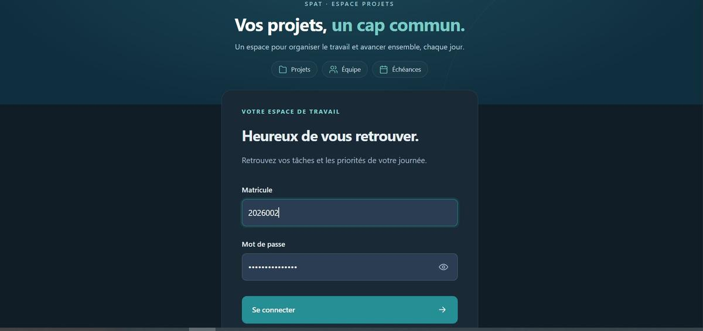
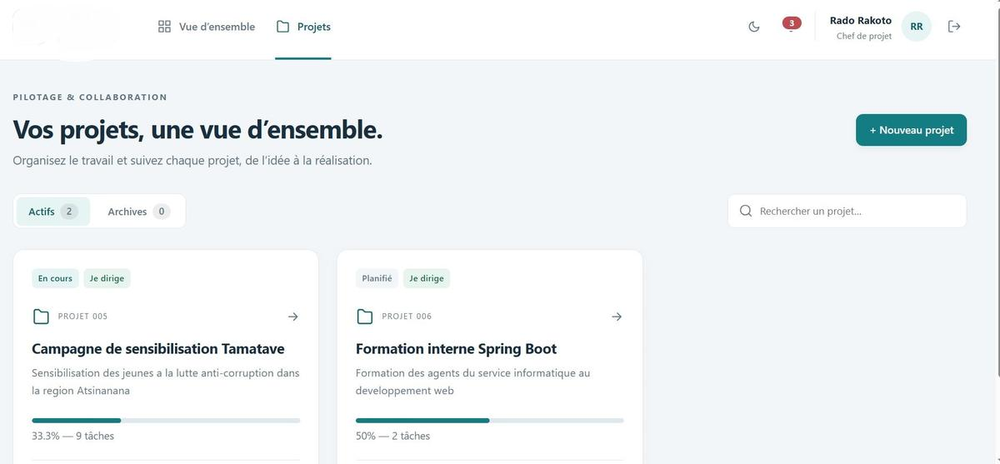
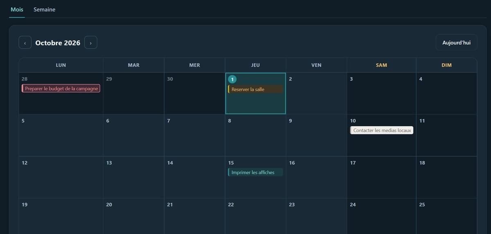

Écran 01
Tableau Kanban
Les tâches sont rangées en colonnes de statut et se déplacent par glisser-déposer.
Une application web interne qui organise le travail d'une équipe en projets et en tâches, suit l'avancement sur un tableau Kanban et repère les retards depuis un tableau de bord. Trois rôles existent (administrateur, chef de projet, membre) et les droits sont revérifiés côté serveur à chaque appel.
Une application web interne qui organise le travail d'une équipe en projets et en tâches, suit l'avancement sur un tableau Kanban et repère les retards depuis un tableau de bord. Trois rôles existent (administrateur, chef de projet, membre) et les droits sont revérifiés côté serveur à chaque appel.
Les captures commentées présentent les fonctionnalités et les parcours disponibles dans ce projet.
Chaque capture ci-dessous explique une page, une fonction ou un moment important du projet.
Les tâches sont rangées en colonnes de statut et se déplacent par glisser-déposer.

L'utilisateur saisit son e-mail et son mot de passe ; un jeton JWT ouvre l'espace correspondant à son rôle.

Une carte par projet, avec son statut et sa barre d'avancement.

Temps passé, discussion entre membres et pièces jointes au même endroit.

Les échéances des tâches sont affichées par mois pour anticiper les retards.

Chaque commentaire, déplacement de tâche ou fichier ajouté prévient les personnes concernées.